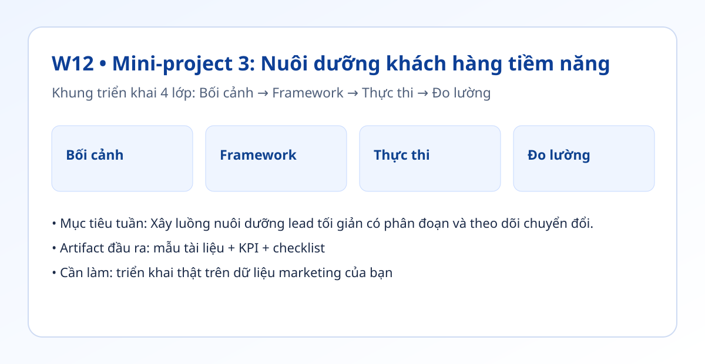

Hình trực quan mô-đun

Bối cảnh thực tế
- Khách hàng tiềm năng vào nhiều nhưng không có chuỗi chăm sóc nhất quán sẽ làm thất thoát cơ hội.
- Luồng nuôi dưỡng không cần phức tạp ngay từ đầu, nhưng phải đo được.
- Tuần cuối tập trung hoàn thiện phễu mini có tỷ lệ mở, CTR và chuyển bước.
Khung tư duy cốt lõi
- Phễu mini: Thu khách hàng tiềm năng -> Phân đoạn -> Chuỗi email 3 bước -> Theo dõi chuyển đổi.
- Phân đoạn lạnh/ấm/nóng theo hành vi tương tác.
- Mỗi email chỉ có 1 mục tiêu và 1 CTA chính.
Quy trình triển khai chi tiết
- Bước 1: Thiết kế biểu mẫu thu khách hàng tiềm năng và đồng bộ dữ liệu vào bảng theo dõi.
- Bước 2: Phân đoạn khách hàng tiềm năng theo mức quan tâm và hành vi.
- Bước 3: Viết chuỗi 3 email: chào mừng, bằng chứng, lời kêu gọi hành động.
- Bước 4: Thiết lập theo dõi tỷ lệ mở, CTR và tỷ lệ chuyển bước.
- Bước 5: Kiểm thử A/B tiêu đề email và CTA trong 2 tuần.
- Bước 6: Tổng kết phễu và đề xuất cải tiến vòng sau.
Tình huống nhỏ với số liệu
| Chỉ số email | Tuần 1 | Tuần 2 |
|---|---|---|
| Tỷ lệ mở | 22% | 31% |
| CTR | 2.1% | 3.4% |
| Chuyển bước sang tư vấn | 4% | 7% |
Kết luận: Ngay cả phễu nhỏ cũng tạo tác động rõ nếu phân đoạn đúng và tối ưu tiêu đề/CTA theo dữ liệu.
Sản phẩm bàn giao tuần này
- Chuỗi email 3 bước hoàn chỉnh.
- Bảng theo dõi khách hàng tiềm năng theo phân đoạn.
- Báo cáo phễu trước/sau 2 tuần.
Bài tập thực hành (45-60 phút)
- Thiết lập biểu mẫu + bảng khách hàng tiềm năng + chuỗi 3 email.
- Chạy thử với 30 khách hàng tiềm năng đầu tiên.
- Đưa ra 2 cải tiến dựa trên tỷ lệ mở/CTR.
Thang đo hoàn thành
| Mức | Mô tả |
|---|---|
| Mức 0 | Chưa có chuỗi email |
| Mức 1 | Có chuỗi nhưng không đo |
| Mức 2 | Có đo tỷ lệ mở/CTR/chuyển bước |
| Mức 3 | Có kiểm thử và cải tiến theo dữ liệu |
Lỗi thường gặp
- Không phân đoạn khách hàng tiềm năng.
- Email dài và nhiều CTA gây loãng mục tiêu.
- Không theo dõi dữ liệu theo từng email.
Video thực hành (tùy chọn)
Phần học chính đã đầy đủ bằng văn bản và ví dụ. Nếu bạn muốn xem thao tác thực tế, dùng các video gợi ý sau:
Đánh dấu tiến độ
Tuần này chưa hoàn thành
Đã hoàn thành tuần 12